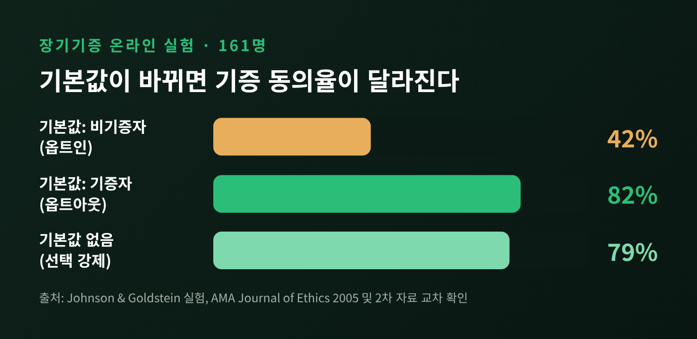
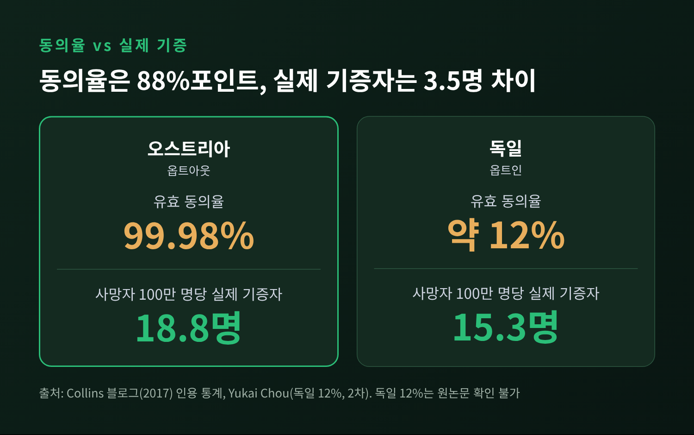
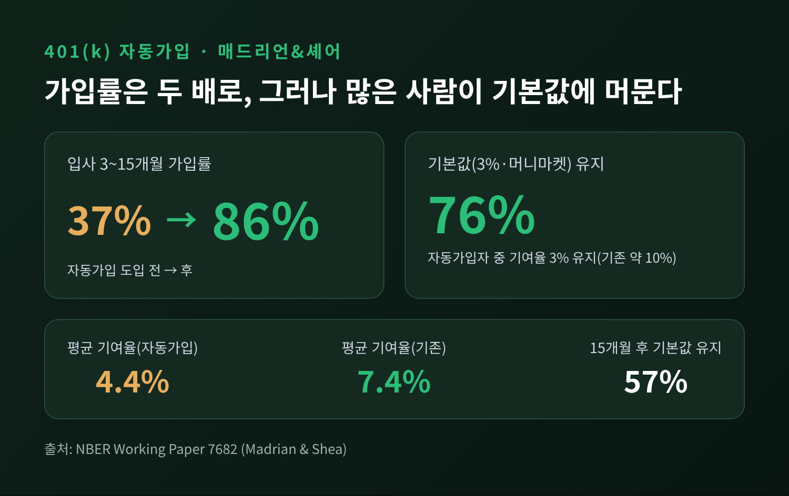
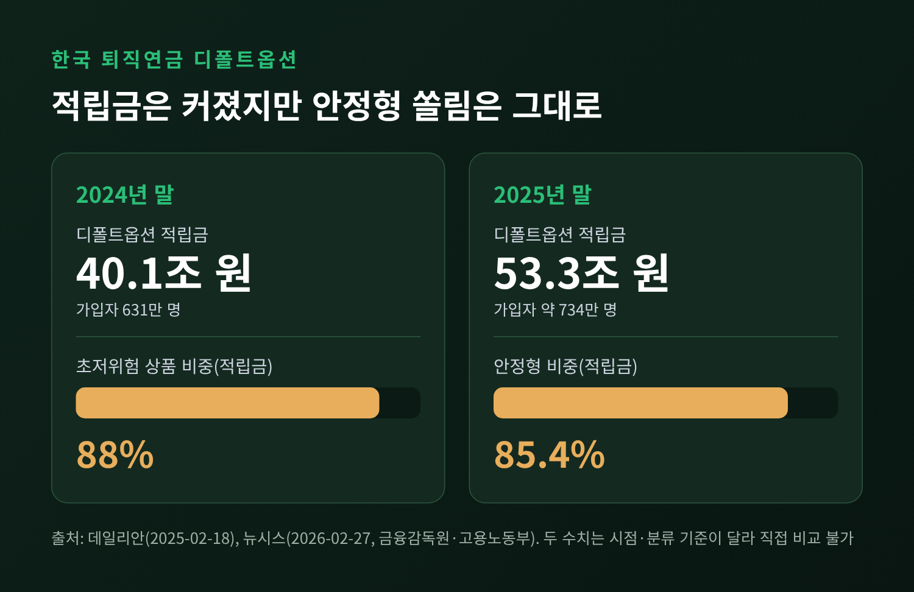
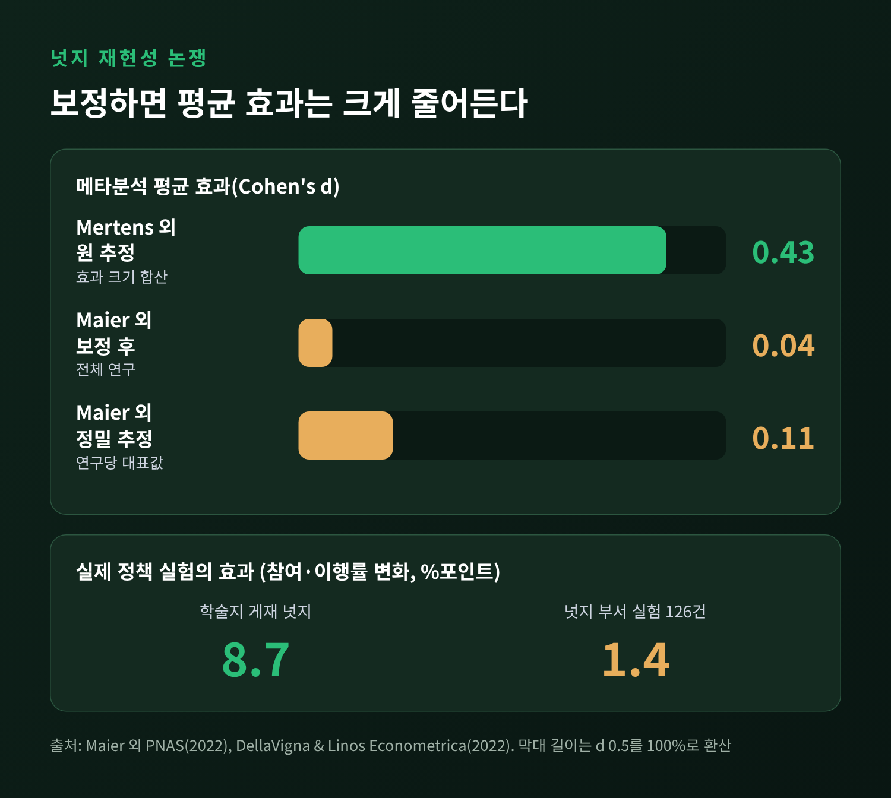

넛지 기본값 효과, 장기기증·퇴직연금으로 본 선택 설계의 한계

이번 글에서는 넛지와 기본값 효과를 장기기증과 퇴직연금 사례로 정리해 보겠습니다. 결론부터 말씀드리면, 기본값은 사람들의 선택을 크게 움직이는 것이 분명합니다. 다만 그 힘이 실제 기증자 수나 노후 자산 같은 최종 결과까지 그대로 이어지는지는 사례마다 다릅니다.
■ 넛지와 기본값, 무엇을 말하는가
넛지는 선택을 금지하거나 강제하지 않으면서 선택이 놓이는 방식을 바꿔 더 나은 결정을 돕는 접근입니다. 리처드 탈러와 선스타인은 이를 선택 설계라고 불렀습니다. 두 사람이 강조한 것은 "중립적인 설계는 없다"는 점입니다.
기본값은 그중 가장 단순한 도구입니다. 아무것도 하지 않았을 때 적용되는 선택지를 미리 정해 두는 것입니다. 사람은 번거로움, 현상 유지 편향, 그리고 기본값을 전문가의 권고처럼 받아들이는 경향 때문에 그대로 두는 쪽을 택하기 쉽습니다. 탈러는 2017년 노벨 경제학상을 받았고, 수상 이유는 심리적으로 현실적인 가정을 경제 분석에 담았다는 것이었습니다.
■ 장기기증: 질문 방식이 답을 바꾼다
기본값 효과의 대표 사례는 2003년 존슨과 골드스타인이 『사이언스』에 발표한 논문입니다. 유럽 국가들의 '유효 동의율'을 비교했습니다. 기증 의사를 직접 밝혀야 하는 옵트인 국가에서는 동의율이 한 자릿수에서 높아야 4분의 1 수준이었습니다. 거부 의사를 밝히지 않으면 동의한 것으로 보는 옵트아웃 국가에서는 90%를 넘었습니다. 오스트리아는 99.98%였고, 이웃한 독일은 등록 성인이 약 12%로 알려져 있습니다. 다만 독일의 12%는 2차 자료에 나온 수치이며, 원 논문에서 확인한 값은 아닙니다.
온라인 실험은 더 직접적입니다. 응답자 161명에게 같은 질문을 서로 다른 기본값으로 던졌습니다. 기본값이 비기증자이면 42%만 기증에 동의했습니다. 기본값이 기증자이면 82%가 동의했습니다. 기본값 없이 반드시 선택하게 한 조건은 79%였습니다.

눈여겨볼 대목은 마지막 숫자입니다. 기본값을 기증자로 두지 않아도, 반드시 한 번 묻기만 하면 거의 같은 수준에 이릅니다. 기본값의 힘 가운데 상당 부분은 '선택 자체를 피하게 만드는 마찰'에서 나온다는 뜻으로 읽힙니다.
■ 높은 동의율이 곧 높은 기증은 아니다
문제는 동의율과 실제 기증이 다른 지표라는 점입니다. 오스트리아의 99.98%는 '거부 등록을 하지 않은 사람의 비율'입니다. 기증을 적극적으로 선택한 사람의 비율이 아닙니다. 게다가 많은 나라에서 사망 후 유족에게 의향을 다시 묻습니다. 유족이 고인의 뜻을 모르면 거절하는 경우가 많습니다.
그래서 실제 기증자 수의 차이는 훨씬 작습니다. 한 블로그가 인용한 통계에서 사망자 100만 명당 기증자는 오스트리아 18.8명, 독일 15.3명이었습니다. 동의율은 약 88%포인트 벌어졌지만 기증자 수는 3.5명 차이입니다. 이 수치는 개인 블로그의 분석을 거친 것이라는 점도 함께 적어 둡니다.

2024년 막스플랑크 인간발달연구소 연구진은 이 의문을 정면으로 검증했습니다. 옵트인에서 옵트아웃으로 제도를 바꾼 국가 가운데 자료가 충분한 5개국, 곧 아르헨티나, 칠레, 스웨덴, 우루과이, 웨일스를 분석했습니다. 제도를 바꾼 뒤에도 기증률의 장기 추세는 달라지지 않았습니다. 추정동의로 전환한 39개국 중 자료가 충분한 곳이 이 다섯 나라뿐이었다는 한계는 있습니다. 연구진은 유족의 거부, 가족 간 대화 부족, 이식 코디네이터 같은 인프라를 이유로 들었습니다.
스페인이 좋은 예입니다. 추정동의법이 있는 나라지만, 세계 최고 수준인 100만 명당 43.4명(2016년)의 비결로는 1989년 설립된 국가이식기구와 병원마다 배치된 이식 코디네이터가 꼽힙니다. 18,000명 이상이 훈련을 받았습니다. 기본값만으로는 부족하고, 기본값 뒤에서 일하는 체계가 있어야 한다는 이야기입니다. 탈러 본인도 운전면허를 갱신할 때 반드시 의사를 묻는 '의무적 선택'을 대안으로 선호했습니다.
■ 퇴직연금: 기본값이 가장 잘 통한 곳
기본값 효과가 가장 선명하게 확인된 영역은 퇴직저축입니다. 2001년 매드리언과 셰어는 한 미국 대기업이 401(k) 자동가입을 도입한 전후를 비교했습니다. 입사 3~15개월 근로자의 가입률이 37%에서 86%로 올랐습니다. 직접 신청하는 단계를 없앴을 뿐인데 가입자가 두 배 넘게 늘었습니다.

이 연구에는 뒷이야기가 있습니다. 기본 기여율은 3%, 기본 펀드는 머니마켓펀드였습니다. 자동가입 근로자의 76%가 3%를 그대로 유지했고, 기여금의 80%가 머니마켓펀드로 갔습니다. 이전 코호트에서 3%를 택한 비율은 약 10%였습니다. 같은 근속기간의 평균 기여율은 자동가입 쪽이 4.4%, 기존 방식 쪽이 7.4%였습니다. 15개월이 지나도 절반 이상이 기본값에 머물러 있었습니다.
예전에는 '가입하지 않은 사람'이 문제였습니다. 이제는 '가입은 했으나 기본값에 갇힌 사람'이 새로운 문제로 떠오른 셈입니다. 기본값이 낮으면 그 숫자가 앵커가 되어 평균 저축을 끌어내릴 수 있습니다.
더 최근의 연구는 순저축 효과를 한층 낮춰 봅니다. 예일대 기사가 소개한 연구는 미국 9개 기업, 약 11만 8천 명의 자료를 분석했습니다. 자동가입이 늘린 순저축은 연 소득의 약 0.6%였습니다. 이직할 때 잔액의 약 40%를 현금화하는 사람이 많다는 점이 한 원인으로 제시됩니다.
영국은 2012년부터 자동가입을 시행했습니다. 2023년 적격 근로자의 직장연금 가입률은 88%였고, 신규 가입자 가운데 약 8~10%가 지난 1년간 빠져나갔습니다. 가입을 이끄는 데는 분명히 성공한 제도입니다. 다만 초소규모 민간 사업장의 가입률은 약 57%에 머뭅니다.
■ 한국의 디폴트옵션이 보여 준 쏠림
한국의 퇴직연금 디폴트옵션도 같은 질문을 던집니다. 근로자가 운용 방법을 지정하지 않으면 미리 정한 상품으로 적립금이 운용되는 제도입니다. 2022년 7월 시작해 1년의 시범을 거쳐 2023년 7월 본격 도입된 것으로 보도되었고, 출범 시점은 매체마다 표기가 조금 다릅니다.
규모는 빠르게 커졌습니다. 2024년 말 가입자는 631만 명, 적립금은 40조 670억 원이었습니다. 2025년 말에는 가입자 약 734만 명, 적립금 53조 3천억 원에 이르렀습니다.

그러나 구성은 한쪽으로 기울어 있습니다. 2024년 말 초저위험 상품이 적립금의 88%였습니다. 2025년 말에는 안정형이 적립금의 85.4%, 가입자의 79.4%를 차지했습니다. 두 수치는 시점과 분류 기준이 달라 직접 비교할 수 없습니다. 다만 방향은 같습니다. 안정형의 수익률은 2.63%로, 물가상승률 2.1%를 간신히 웃돌았습니다. 중위험은 10.81%, 적극투자형은 14.93%였지만 이 구간의 수익률은 매년 달라질 수 있습니다.
기본값은 가입 여부만이 아니라 위험 수준까지 정합니다. 금융감독원이 자산 분산과 장기 투자를 권고한 이유가 여기 있습니다. 정부는 기관별 위험등급 비중을 공시하고 상품 이름을 '위험' 중심에서 '투자' 중심으로 바꾸는 등 쏠림을 줄이는 방향으로 손보고 있습니다.
■ 재현성 논쟁: 넛지는 얼마나 효과가 있는가
넛지 전반에 대한 평가도 흔들리고 있습니다. 2022년 메르텐스 연구진의 메타분석은 선택 설계 개입의 평균 효과를 Cohen's d 0.43으로 추정했습니다. 같은 해 마이어 연구진은 출판 편향을 보정해 이를 다시 계산했습니다. 결과는 d 0.04, 가장 정밀한 추정치로는 0.11이었습니다. 이들은 "넛지가 효과적이라는 증거가 남지 않는다"고 썼습니다.
반론도 있습니다. 마이어 연구진 스스로 이는 '모든 넛지가 실패했다'가 아니라 '전체적 증거가 없다'는 뜻이라고 선을 그었습니다. 서로 다른 개입을 한 평균으로 묶는 것이 적절한지에 대한 비판에도 동의했습니다. 연구자 슈마크(Schimmack)는 2026년 블로그 글에서 보정 방식이 가정에 크게 의존한다고 주장하며, 허위발견율이 6% 수준이라는 자신의 분석을 내놓았습니다. 이는 동료심사를 거친 논문이 아닌 블로그 분석이라는 점에 유의하셔야 합니다.

현장 자료도 비슷한 방향입니다. 델라비냐와 리노스는 미국 넛지 부서 두 곳의 무작위 실험 126건, 2,300만 명 이상을 분석했습니다. 학술지에 실린 넛지는 평균 8.7%포인트, 넛지 부서 실험은 1.4%포인트의 효과를 보였습니다. 저자들은 출판 편향과 낮은 검정력이 이 격차를 설명할 수 있다고 봅니다.
기본값이 이 논쟁에서 어디에 놓이는지는 조심스럽게 말해야 합니다. 마이어 연구진의 분석에서 '구조' 범주, 곧 기본값 같은 선택 구조의 변경은 d 0.23으로 정보 제공(0.00)이나 지원(0.01)보다 높았지만 증거는 결론 내기 어려운 상태였습니다. 자동가입처럼 관성이 강한 행동에서 가입률이 크게 오른다는 증거는 반복해서 나옵니다. 이 문단은 여러 결과를 종합한 저의 정리입니다.
■ 선택 설계를 쓸 때 기억할 것
정리하면 세 가지입니다. 첫째, 기본값은 '선택하는 수고'를 줄이는 도구입니다. 둘째, 높아진 가입률과 동의율이 최종 목적, 곧 기증자 수나 노후 자산과 같은 것은 아닙니다. 셋째, 기본값은 설계자의 판단이 담긴 숫자입니다. 3%라는 기본 기여율도, 안정형이라는 기본 상품도 누군가 정한 값입니다.
마지막으로 한 가지만 덧붙이겠습니다. 기본값을 정하는 사람은 그 값이 대다수의 최종 선택이 된다는 점을 알고 정해야 합니다. 그리고 기본값 뒤에서 일하는 코디네이터나 공시 같은 장치까지 함께 설계해야 합니다.
"기본값은 선택의 시작일 뿐, 결과를 보증하지 않습니다."
기본값이 대신 정해 준 선택에 만족하시겠냐고 물으신다면, 저는 그 값을 정한 이유를 먼저 확인하겠다고 답하겠습니다.